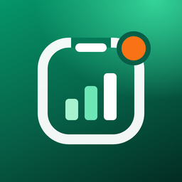

BucketGuard 存錢桶管家
目標存錢 × 免費試用到期提醒
銀行餘額看起來很多，其實早被稅金、旅費、保費預定了；免費試用一忘記取消，就被扣了整個月甚至整年。BucketGuard 幫你把這兩件事管好。
主要功能
- 目標存錢桶：把大額支出分桶存，算出「真實可自由花用餘額」，自動試算每月要存多少
- 試用防漏財：扣款前 48、24、12、6、2 小時提醒，附退訂路徑，一鍵開啟官方頁面
- 固定訂閱：月付／年化切換，漲價與重複類別一眼看出
- 發薪日分配：依優先順序一鍵分配薪水，5 秒內可復原
- 省錢戰績：累計擋下的扣款、五種圖表、年度回顧與 CSV 匯出
免費使用與去除廣告
所有功能免費。「存錢桶」「發薪日分配」「省錢戰績」三個分頁底部有一則小廣告（安裝 3 天後才出現）；「試用防漏財」與 24 小時強提醒永遠不放廣告。在「設定 → 去除廣告」付費一次（NT$90），就能永久去除廣告；換手機時按「恢復購買」。
隱私：不需要註冊或登入，不連結銀行，資料只存在你的手機，BucketGuard 本身不追蹤你的使用行為。詳見隱私權政策。
常見問題
提醒沒有跳出來？
請到手機「設定 → 通知 → BucketGuard」確認已允許通知。提醒是手機本機排程，不需要網路；但關閉通知、專注模式或手機關機時可能延遲。
銀行餘額和 App 不一致？
BucketGuard 不會連結銀行，請在「設定 → 銀行帳戶」手動更新存款。存入存錢桶只是預留，不會減少銀行存款；記錄「支出」時才會一起扣除。
換手機資料會不見嗎？
資料只存在原本的手機。換機前請到「設定 → 加密備份」匯出備份檔，在新手機用同一個密碼還原。
已經買了去除廣告，換手機後廣告又出現？
用同一個 Apple ID 登入，到「設定 → 去除廣告」按「恢復購買」。
已被扣款的試用怎麼處理？
在「試用防漏財 → 已到期」選「已被扣款，移除」，這筆不會計入省錢戰績。
聯絡與支援
使用上的問題或建議，請來信：goodaycreation@gmail.com
隱私權政策 · Privacy Policy · 使用條款 · 好日子創意所